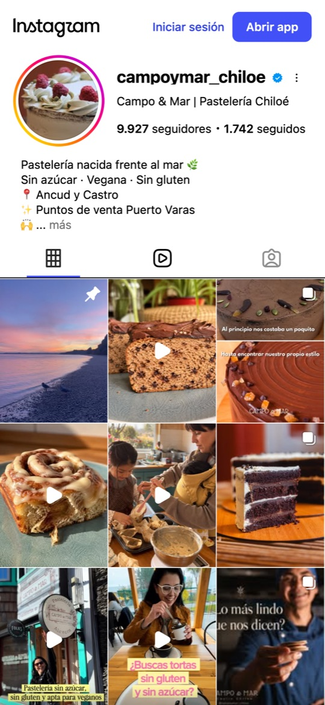
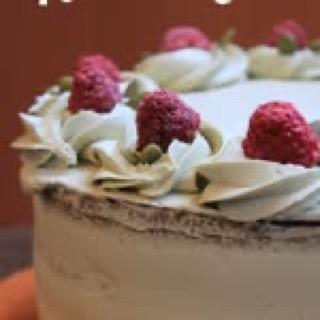

Así se ve hoy (13 de noviembre de 2026, sin iniciar sesión). Se entiende qué hacen, pero no cómo comprar: sin link, el mayorista detrás de "… más", sin precios, y arriba un atardecer sin torta ni cara.
campoymar_chiloe

402publicaciones
9.927seguidores
1.742seguidos
Campo & Mar | Pastelería Chiloé
Pastelería
Pastelería nacida frente al mar 🌿
Sin gluten · sin azúcar refinada · opciones veganas
📍 Pudeto 386, Ancud · Thompson 285, Castro
☕ En 9 cafés del sur
🌿 Lo que salió hoy y lo que está en prueba ↓
campoymar.jpfraneto.com/hoy